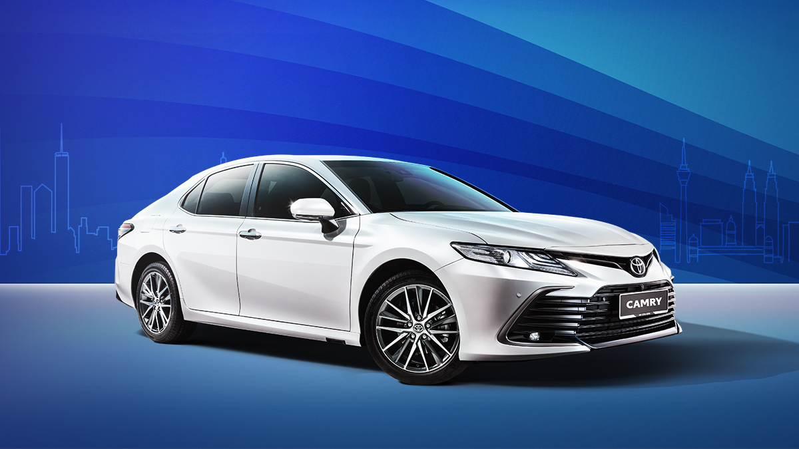

PROTON PERDANA & TOYOTA CAMRY


The 2024 Toyota Camry is a midsize sedan known for its reliability, comfort, and advanced technology.
It offers hybrid and gasoline engine options, with a focus on fuel efficiency, smooth driving, and a premium interior. The 2024 Proton Perdana, a Malaysian sedan, emphasizes value with a sleek design, spacious cabin, and modern features.
Powered by a turbocharged engine, it provides a balance of performance and economy, catering to those seeking an affordable yet stylish option in the midsize segment.
Pre launch concept cars
The Toyota Camry Vision-X concept reimagines the classic sedan with an all-electric powertrain, sleek aerodynamic design, and a futuristic digital cabin. It integrates advanced autonomous features, sustainable materials, and Toyota’s cutting-edge tech, offering a quiet, eco-friendly driving experience.
The Proton Perdana Evoke concept blends luxury with innovation, featuring a plug-in hybrid or electric drivetrain. Its dynamic design, premium interior, and advanced driver-assist systems prioritize comfort, connectivity, and sustainability, offering a modern take on Proton’s flagship sedan.